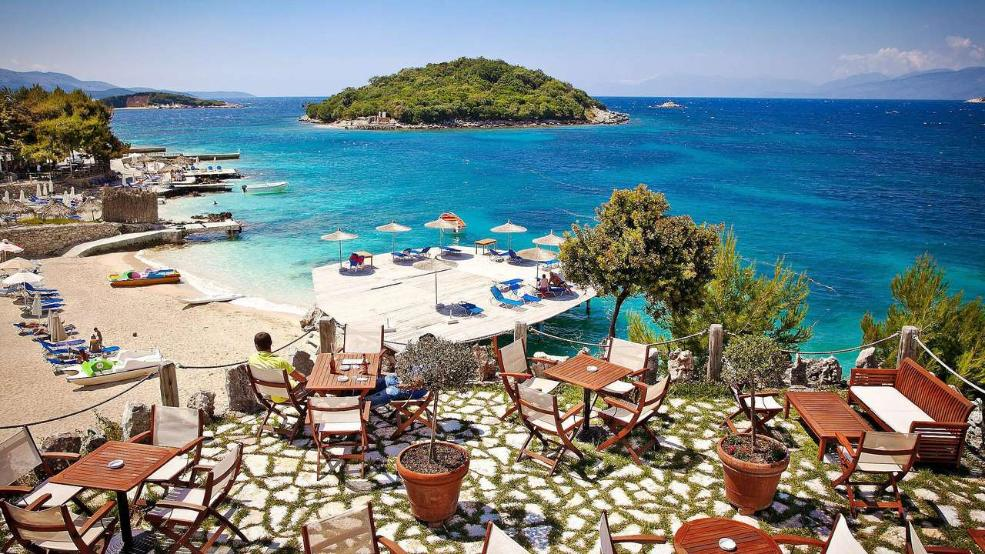
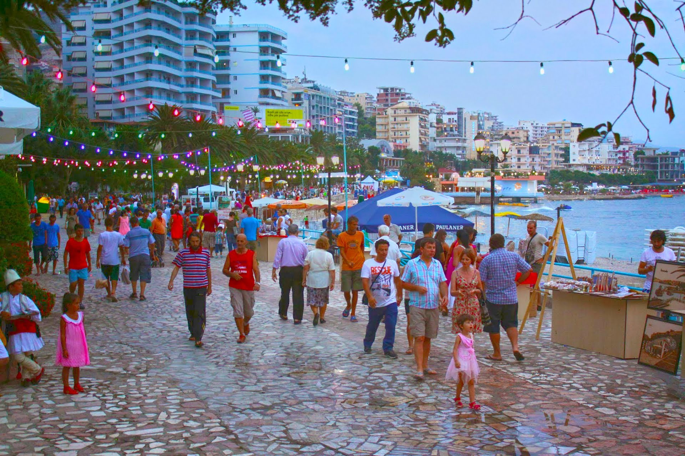
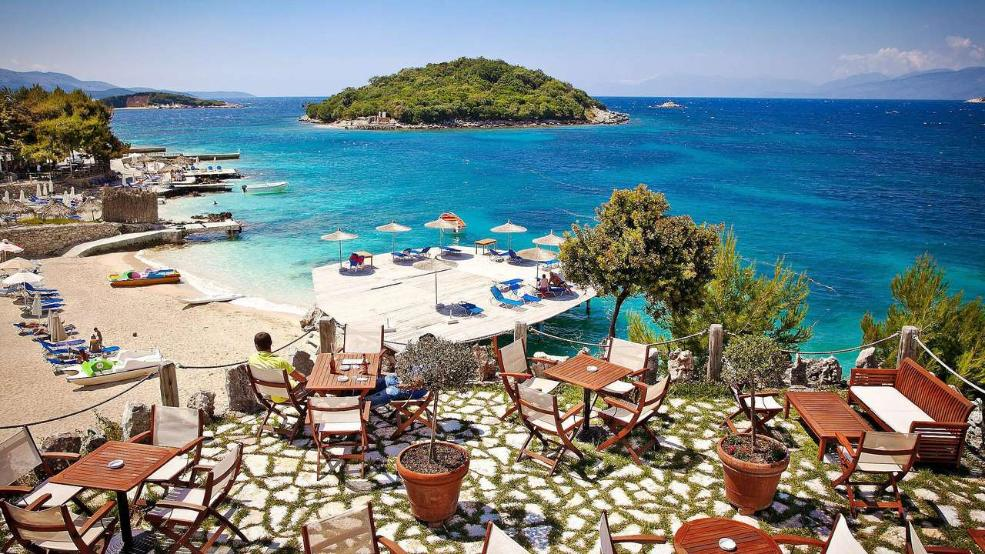
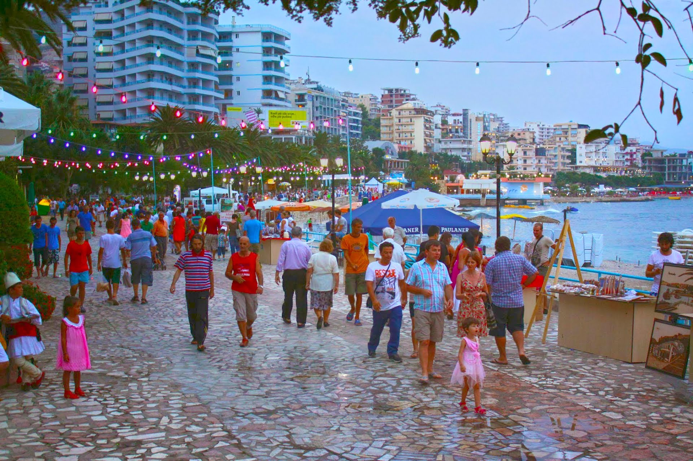

Places we visit
Shqiperia (Albanie), is also known as “The Land of Eagles” and Europe’s hidden gem. Through our trip you will discover the magic of these cities while enjoying the gentle sea breeze and the beautiful beaches. The sweet smell of the fine Albanian cuisine and the colorful sounds of the polyphonic music, will accompany you throughout the entire trip.
Quick facts: Official language is Albanian (Indo-European language which has no similarities with other languages). Most common religions are: Muslim (50%), Orthodox (20%), Catholic (15%). Capital of Albania is Tirana, whereas three other cities are UNESCO World Heritage Sites such as: Butrint, Gjirokastra and Berat. Albanians are decedents of Pelages (Iliryans, Epirotes, Ancient Macedonians).
Famous Albanians:Mother Theresa (now Saint Teresa), George Castrioti Scanderbeg(Albanian lord, "Hero of Christians" with statue in Brussels), Justinian I-er (Byzantine Emperor), John & James Belushi (actors)
Kruja - is a town in north central Albania , previously inhabited by the Illyrian tribe of the Albania. In 1190 Krujë became the capital of the first autonomous Albanian state in the middle ages, the Principality of Arbër and then the capital of the Kingdom of Albania. Kruja is known as the centre of Albanian resistance against the Turks under our national hero Scanderbeg. He kept them from crossing into Western Europe for 25 years, thus earning the title “Champion of Christ” given by the Pope of the time. You will admire the Castle of Kruja, built during the 5th and 6th centuries. Inside the castle you can visit the Museum of Gjergj Kastrioti Skanderbeg. You will have lunch in one of the restaurants, tasting the traditional food of this area. Whereas downtown is the Old Bazaar, where the best handmade souvenirs can be purchased.
Vlora
The "City of Oranges and Olives" is a coastal city and municipality in southern Albania. It is the second largest port city of Albania, after Durrës. It is where the Albanian Declaration of Independence was proclaimed on November 28, 1912. Vlorë was briefly the capital of Albania. Vlorë remains a major seaport and commercial centre, with a significant fishing and industrial sector. The surrounding region produces petroleum, natural gas, bitumen and salt. The city is also the location of important installations of the Albanian Navy.
Porto Palermo Castle
Porto Palermo Castle - is a castle near Himarë in southern Albania. It is situated in the bay of Porto Palermo. Huffington Post ranked Porto Palermo first among 15 Undiscovered European Destinations for 2014. Was built by Ali Pasha in 1804. Fort has triangular shape with three powerful pentagonal towers at the corners. Fort is small inside. During World War II it was used as a prison.
Saranda
 


Saranda - is one of the most important tourist attractions of the Albanian Riviera. It is situated on an open sea gulf of the Ionian Sea in the central Mediterranean, about 14 km (8.7 mi) east of the north end of the Greek island of Corfu. The total population is 20,227. In antiquity the city was known by the Illyrian name of Onchesmos or Anchiasmos and was inhabited by the Illyrian tribe of the Chaonians. It was occupied twice by Greece in 1913 and from 1914 to 1916.Owing to Venetian influence in the region, it often appeared under its Italian name Santi Quaranta on Western maps. During the second occupation in World War II, Benito Mussolini changed the name to Porto Edda, in honor of his eldest daughter. Tourism is thus the major economic resource, while other resources includeservices, fisheries and construction.
Butrint
An UNESCO World Heritage Site, is one of the most important archaeological sites in the country containing different artifacts and structures which date from the Bronze Age up until the 19th century. A number of major monuments are still extant including the city walls, late-antique baptistery, great basilica, theatre and Venetian castles. The property is a microcosm of Mediterranean history, with occupation dating from 50 000 BC, at its earliest evidence, up to the 19th century AD. The park, a UNESCO World Heritage Site, is one of the most important archaeological sites in the country containing different artifacts and structures which date from the Bronze Age up until the 19th century. In addition to archaeological remains the site is robed by natural woodland. It is this combination of historic monuments and natural environment that makes Butrint such a unique place, a 'landscape with monuments' as beloved of the Grand Tourists of the 18th and 19th centuries.
Ksamil
Ksamil is one of the most frequented coastal resorts by both domestic and foreign tourists. Ksamil Beach and Albania's Jonian Coast further north was included in the Guardian's 20 of the best bargain beach holidays for 2013. The main attractions are the nearby Ksamil Islands. There are four small Islands where two of them are reachable also by swimming. The mainland beach is small but clean. During communism, the area became well known for the production of olive oil, lemons, and tangerines
Syri i Kalter
A must see natural phenomenon of clear blue water of the river bubbles forth from a stunning, more than fifty-metre-deep pool. Divers have descended to fifty metres, but it is still unclear what the actual depth of the karst hole is.
Gjirokastër
Lying in the historical region of Epirus, an old town is a World Heritage Site described as "a rare example of a well-preserved Ottoman town." Around the ancient 13th century citadel, the town has houses with turrets, which are characteristic of the Balkans region. Gjirokastra contains several remarkable examples of houses of this type, which date from the 17th century, but also more elaborate examples dating from the early 19th century. Many houses in Gjirokastër have a distinctive local style that has earned the city the nickname "City of Stone", because most of the old houses have roofs covered with flat dressed stones. Gjirokastër is home of Albanian iso-polyphonic singing. The phenomenon of Albanian folk iso-polyphony (Albanian iso-polyphony) has been proclaimed by UNESCO a "Masterpiece of the Oral and Intangible Heritage of Humanity". Gjirokastra is a magical town of many legends, amazing Ottoman architecture and it is perched atop a mountain facing the beautiful, strategic and historical River Drinos.
Tirana
Tirana became Capital in 1923, the first regulatory city plan was compiled by Austrian architects. The centre of Tirana was the project of Florestano Di Fausto and Armando Brasini, well known architects of the Benito Mussolini period in Italy. Mother Teresa became the first religious figure to visit the country, Tirana in 1988 following Albania's long declared anti-religious atheist stance. Starting at the campus and ending at Skanderbeg Square the city saw significant demonstrations by University of Tirana students, demanding political freedoms in the early 1990s. Sightseeing tour in Tirana includes: National History Museum The Clock Tower,The Ethem Bey Mosque The Pyramid, the National Martyrs Boulevard, Goverment buldings,Residential of Albanian President , Mother Teresa square, the Polytechnic University. Still relatively unspoiled by globalization, you will notice an inspiring and unique mix of civilizations and cultures!
Durres
Historically also known as Durazzo and Dyrrachium, is the second largest city of Albania, one of the most ancient and economically significant cities of Albania. Durrës is at one of the narrower points of the Adriatic Sea. Though surviving remains are minimal, as one of the oldest cities in Albania, the city was founded as Epidamnos in the ancient region of Illyria in 627 BC. Apart from other historical monuments, the city hosts the Durrës Ancient City Wall called also Durrës Castle while the largest amphitheatre in the Balkans is in the city close to the harbour. Built in the 2nd century AD during Roman Emperor Trajan's rule, it is located in the centre of the city and is only half unearthed. The Durrës Amphitheatre is the largest amphitheatres in the Balkan Peninsula, having a capacity of 20,000 people.